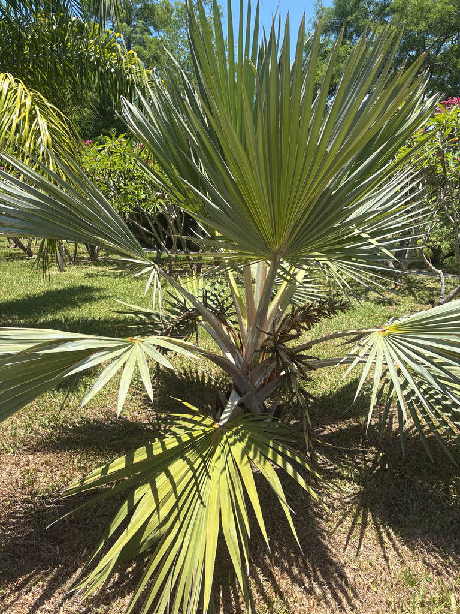

- This palm is critically close to gone in the wild. Its only surviving natural populations grow on a single tiny island — Round Island, roughly a square mile of volcanic rock off the north coast of Mauritius — where goats and rabbits had eaten it nearly to extinction before conservation efforts began removing the animals in the late 1970s.
- Young Blue Latan Palms look nothing like adults. Seedlings and juveniles carry vivid red-tinged petioles and leaf margins; it is only with age that the foliage mellows into the powder-blue fans you see at the top of this tree.
- There are three latan species — blue, red, and yellow — each named for the tint of its leaf stalks. But mature adults are notoriously hard to tell apart; UF/IFAS notes that reliable identification requires young leaves before they've faded to silver.
- The species name loddigesii honors Joachim Loddiges (1738–1826), a German-born nurseryman who established one of the most important plant nurseries in early-nineteenth-century London and was among the first to introduce large numbers of exotic plants to European cultivation.
The Blue Latan Palm is endemic to Mauritius, one of the Mascarene Islands in the western Indian Ocean. Its wild range has contracted dramatically over the centuries, and today the only surviving natural populations grow on Round Island, a tiny uninhabited islet roughly a square mile in area lying about fourteen miles north of Mauritius's main coast.
The genus Latania contains only three species, each restricted to a different Mascarene island: the Blue Latan to Mauritius (Round Island), the Red Latan (Latania lontaroides) to Réunion, and the Yellow Latan (Latania verschaffeltii) to Rodrigues.
Humans have carried all three far beyond their home islands as ornamentals, and the Blue Latan is now established in tropical and subtropical gardens worldwide, including Florida.
- Round Island's Blue Latan Palms were pushed toward extinction by introduced goats and rabbits, which stripped the island's vegetation over more than a century. Conservation efforts beginning in the late 1970s — including the eradication of the goat population by 1979 and the rabbit population by 1986 — allowed the palm community to recover dramatically.
- The island is now a nature reserve jointly managed by the National Parks and Conservation Service and the Mauritian Wildlife Foundation.
- The IUCN lists Latania loddigesii as Endangered — a reminder that an ornamental common in Florida gardens is, in the wild, hanging on by a thread on one very small island.
- The species epithet loddigesii honors Joachim Loddiges (1738–1826), who ran a celebrated nursery near London and was one of the great introducers of exotic plants to European gardens in his era. The genus name Latania comes from latanier, a French Creole corruption of the native Mascarene name for these palms.
- One practical note for Florida growers: UF/IFAS flags the Blue Latan as susceptible to lethal yellowing disease, a phytoplasma infection spread by plant-hoppers that has devastated many palm species across South Florida. It is worth keeping this in mind when siting the tree in a landscape.
In its native habitat on Round Island, this palm carries an outsized role. A study of Günther's day gecko (Phelsuma guentheri) — one of Mauritius's most threatened reptiles — found that Latania loddigesii hosted nearly 79 percent of all gecko nest sites on the island, making it essentially the keystone nest tree for that species.
The palm's stiff, sheltered leaf bases provide ideal conditions the geckos use to glue their eggs.
In Florida cultivation, the wildlife connections are more modest. The spring inflorescences attract general insect pollinators, and female trees produce small brown fruits that can be taken by birds. The Blue Latan has no documented role as a larval host for Florida butterflies or moths, and its pollinator value here is incidental rather than specialized.
Visitors looking for the park's richest pollinator habitat will find it in the native plantings.
Propagation is by seed only — no suckering, no vegetative spread. The Blue Latan is dioecious: male and female flowers are borne on separate individual trees. Only females fruit, and only when a pollen-producing male is present. Seeds are short-lived and lose viability quickly after the fruit ripens.
Small, yellowish-brown flowers appear on branched inflorescences that emerge from among the leaves in spring. Male inflorescences are shorter and more branched (to about three feet); female inflorescences are longer and simpler (to about six feet). Male and female flowers are on separate trees.
Female trees produce small, glossy brown, roughly oblong fruits about two inches across, each containing a single seed. The fruit is not edible. Fruits can be found ripening on the tree over an extended period following spring bloom.
Costapalmate and fan-shaped — the large circular blade is stiffened by a central rib (costa) that curves the frond into a shallow dome rather than a flat disc. Mature fronds are silvery blue-grey, up to eight feet wide, and remarkably thick and leathery, with a pale woolly coating on the underside. Young plants show red-tinged petioles and leaf margins that fade with age.
Petioles reach about five feet in length and carry small marginal teeth near the base.
Solitary, upright, pale gray, and distinctly swollen at the base. The trunk reaches about ten inches in diameter at maturity and is marked with slightly raised, irregular leaf-scar rings. The overall form is clean and architectural — no branching, no suckering.
Start at the crown: a compact dome of stiff, silvery-blue fans sitting atop a single, swollen-based gray trunk. Look closely at the leaf undersides for the pale woolly coating that contributes to the silvery sheen. If the palm is young, check whether the petioles and leaf margins show any red tinge — that coloring fades as the tree matures.
In spring, look for the branching flower stalks emerging from among the leaf bases; female stalks are noticeably longer and less branched than male ones. Glossy brown fruits, when present, tell you you're looking at a female.
The petioles carry small marginal teeth near the base that can scratch skin when working close to the fronds — worth a moment's awareness. The fruit is not edible, but no toxicity to people, dogs, or cats has been documented. Otherwise harmless.
UF/IFAS rates this species for USDA Hardiness Zones 10B through 11. Bradenton sits in Zone 10A, so specimens here are at the cooler edge of reliable outdoor hardiness and may show stress in an unusually cold winter. The Blue Latan has no documented invasive or naturalization history in Florida's natural areas.
UF/IFAS flags susceptibility to lethal yellowing disease — a serious phytoplasma infection present in South Florida — and recommends using this species sparingly in the landscape for that reason. Staff monitor the park's specimen accordingly.


- © Randall Carter (CC-BY-NC), via iNaturalist